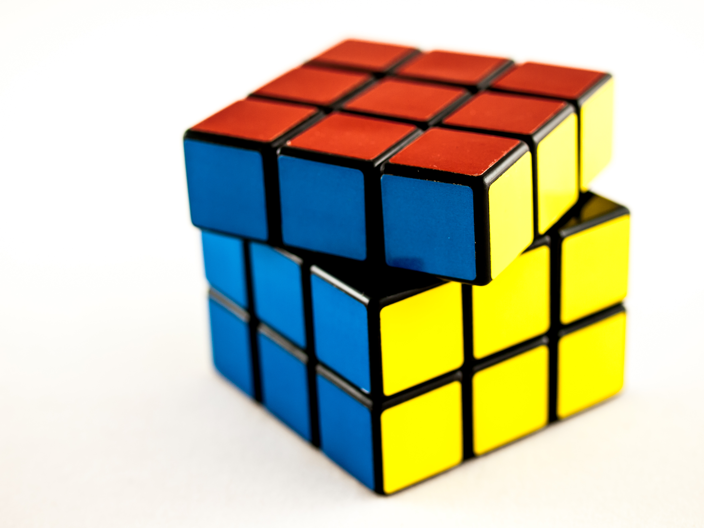
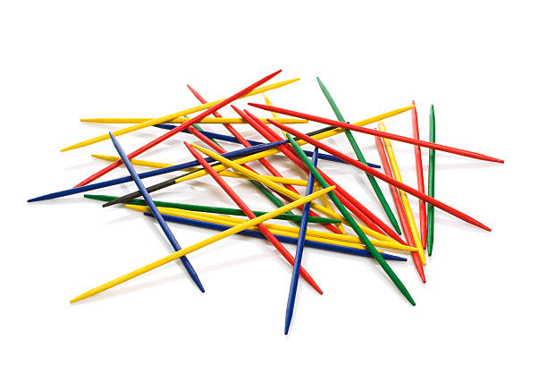
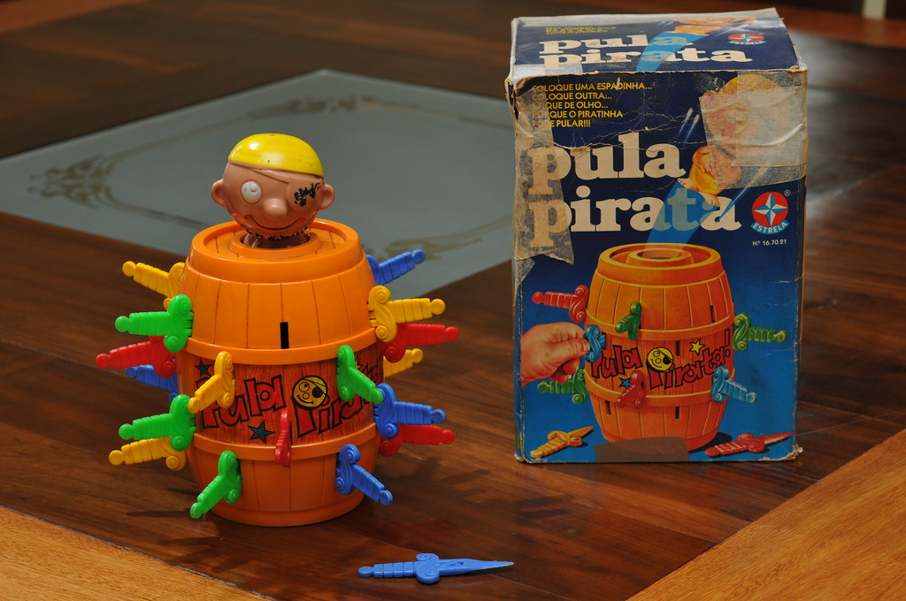
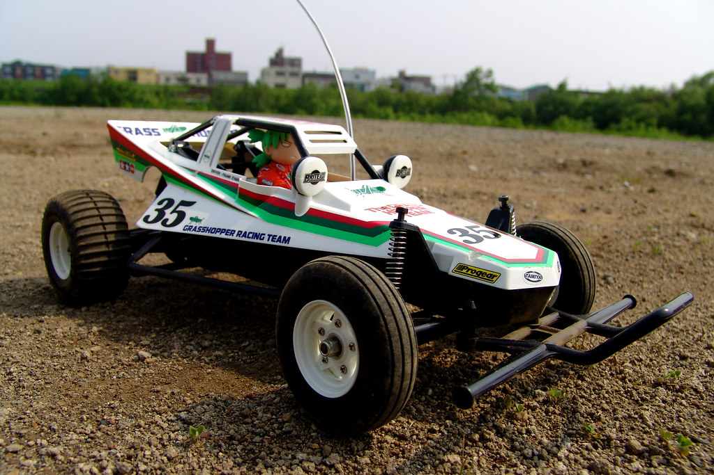
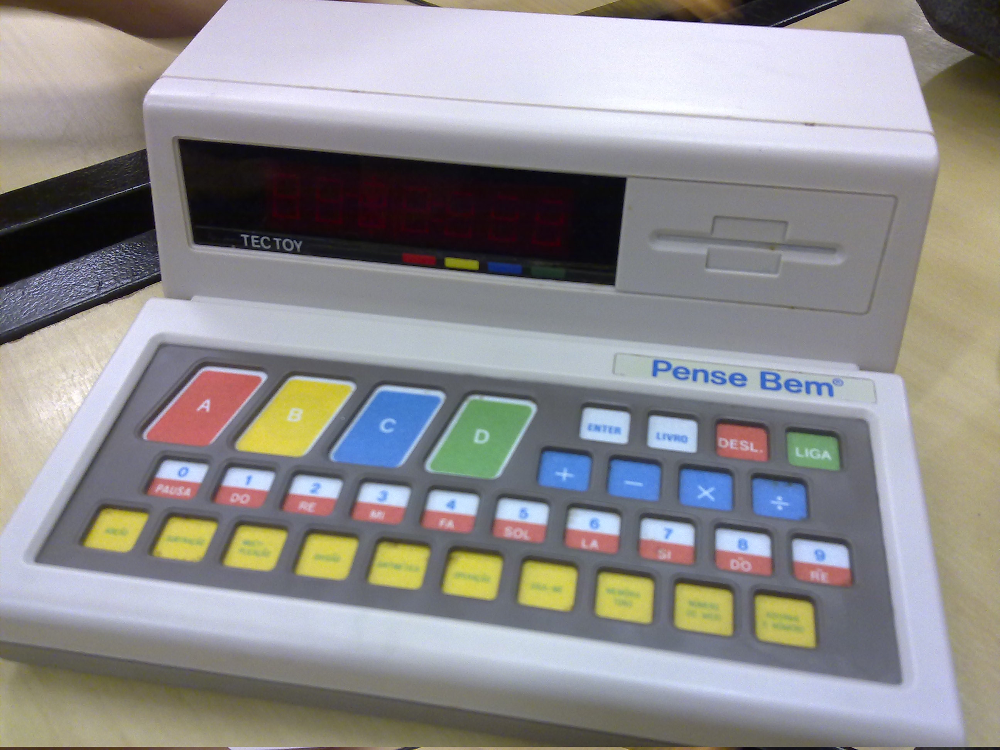

Brinquedos e Jogos
Bem-vindo ao nosso mundo de diversão sem fim! Descubra brinquedos emocionantes, jogos cativantes e entretenimento interativo que transcende gerações. Explore curiosidades, análises e as últimas novidades, mergulhando na diversão de brincar e competir. Junte-se a nós nesta jornada pela alegria dos brinquedos e jogos.
Anos 80
Brinquedos
Cubo Mágico (Rubik's Cube)
O Cubo Mágico, também conhecido como Rubik's Cube, é um quebra-cabeça tridimensional que se tornou um fenômeno cultural nos anos 80. Inventado pelo húngaro Ernő Rubik em 1974, o Cubo Mágico foi lançado comercialmente em 1980 e rapidamente conquistou o mundo. Com suas seis faces coloridas e inúmeras combinações possíveis, ele desafiou a mente de crianças e adultos, tornando-se um ícone da década e um dos brinquedos mais populares de todos os tempos. Sua complexidade e apelo atemporal continuam a cativar entusiastas de quebra-cabeças até hoje.
Curiosidade!
Uma curiosidade fascinante sobre o Cubo Mágico é que existem mais de 43 quintilhões de combinações possíveis em um cubo 3x3x3 padrão. Isso significa que, teoricamente, você poderia misturar as cores de um Cubo Mágico de tal forma que levaria uma vida inteira para resolvê-lo, se tentasse uma combinação diferente a cada segundo. Essa imensa complexidade é um dos motivos pelos quais o Cubo Mágico continua a intrigar e desafiar as mentes das pessoas em todo o mundo.
Pega Varetas
O "Pega Varetas" era um jogo de destreza e habilidade que proporcionava horas de diversão para crianças e até mesmo adultos. O jogo consistia em um conjunto de varetas coloridas espalhadas sobre uma mesa. O objetivo era pegar uma vareta sem mover as outras. Cada vareta tinha uma pontuação e ganhava quem acumulasse mais pontos. Este simples jogo era uma forma de entretenimento nostálgica e envolvente, que muitos ainda lembram com carinho dos anos 80.
Curiosidade!
O "Pega Varetas" foi criado originalmente na Hungria em 1930 e se chamava "Mikado." Durante a Segunda Guerra Mundial, soldados americanos descobriram o jogo na Europa e o trouxeram para os Estados Unidos. O nome "Pega Varetas" foi adotado para torná-lo mais acessível para o público americano. Desde então, o jogo se espalhou pelo mundo e se tornou um dos passatempos favoritos das crianças dos anos 80 e 90.
Pula-Pirata
O "Pula-Pirata" foi um brinquedo popular nas décadas de 80 e 90. Era um jogo de suspense e habilidade que envolvia retirar espadas do barril de um pequeno pirata sem fazê-lo pular para fora do barril. Cada jogador alternava, inserindo suas espadas no barril até que, eventualmente, o pirata saltava para fora, surpreendendo a todos. Era um jogo emocionante que testava a coragem dos participantes enquanto tentavam evitar que o pirata saltasse.
Curiosidade!
O "Pula-Pirata" foi inspirado em um jogo de origem alemã chamado "Pop-Up Kasper," que envolvia fazer um fantoche de palhaço pular de uma caixa. A versão de pirata foi adaptada e se tornou um sucesso internacional.
Carrinho de Controle Remoto (RC)
Os carrinhos de controle remoto eram uma febre nos anos 80. Eles vinham em várias formas e tamanhos, desde carros de corrida rápidos até caminhões monstros. O que tornou esses brinquedos tão especiais foi a capacidade de controlá-los à distância usando um controle remoto. Os entusiastas podiam competir em corridas emocionantes e realizar acrobacias incríveis com seus carrinhos de controle remoto.
Curiosidade!
Os carrinhos de controle remoto evoluíram significativamente desde os anos 80. Hoje em dia, eles são equipados com tecnologia avançada, como câmeras e conectividade com smartphones, permitindo uma experiência de controle ainda mais emocionante.
Pense Bem
O "Pense Bem" foi um brinquedo icônico dos anos 80 que encantou crianças e proporcionou uma experiência educacional única. Este dispositivo eletrônico introduziu as crianças ao mundo da resolução de quebra-cabeças, perguntas e cálculos matemáticos de uma forma divertida e envolvente. Com seu design inovador e interatividade, o "Pense Bem" tornou-se um símbolo da era da tecnologia educacional para crianças na década de 1980. Vamos explorar mais sobre essa peça nostálgica que fez parte da infância de muitos.
Curiosidade!
Uma curiosidade fascinante sobre o "Pense Bem" é que, apesar de ser considerado uma versão mais simples de um computador, ele foi projetado com a consultoria do renomado psicólogo Jean Piaget, que se destacou por seus estudos sobre o desenvolvimento cognitivo infantil. A influência de Piaget na criação do "Pense Bem" ajudou a moldar seu conteúdo de acordo com os estágios de desenvolvimento intelectual das crianças, tornando-o uma ferramenta educacional eficaz e adaptada às necessidades de aprendizado da época. Essa colaboração entre a tecnologia e a psicologia contribuiu para o sucesso duradouro do brinquedo.